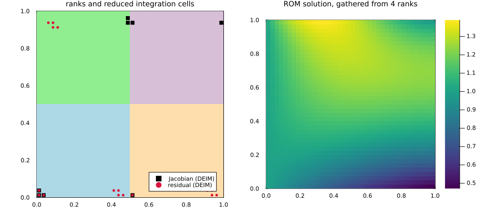

Tutorial 4: Distributed-memory ROMs

In this tutorial we learn
- how to run the whole ROM pipeline of the previous tutorials in parallel, with MPI
- which data structures and algorithms make this possible
The code of this tutorial is not executed when building the documentation. Copy it into a script, and run it as explained in Running with MPI.
Why distributed ROMs
The offline phase of a ROM is far more expensive than a single FE solve: it requires tens to hundreds of FE solves, plus the assembly of as many residuals and Jacobians, their compression, and the hyper-reduction. As soon as the FE problem calls for a distributed-memory solver, the offline phase must be distributed too. Gathering snapshots on a single process is not an option: a snapshot matrix is as large as the number of DOFs times the number of parameters.
GridapROMs builds on GridapDistributed and PartitionedArrays so that every step of the offline phase (snapshots, compression, enrichment, hyper-reduction, Galerkin projections, I/O) runs on partitioned data, without ever gathering a full-order quantity on a single process.
A distributed ROM
The code is the one of Tutorial 2. The only changes are the creation of the processor grid and the distributed model, as in GridapDistributed:
using DrWatson
using Gridap
using GridapDistributed
using PartitionedArrays
using GridapROMs
function main(distribute,parts)
ranks = distribute(LinearIndices((prod(parts),)))
model = CartesianDiscreteModel(ranks,parts,(0,1,0,1),(40,40))
D = ParamSpace((1,10,1,10,1,10))
κ(μ) = x -> 1 + μ[1]*exp(-x[1]*x[2])
κμ(μ) = parameterise(κ,μ)
g(μ) = x -> exp(-x[1]/μ[2])
gμ(μ) = parameterise(g,μ)
h(μ) = x -> 5*cos(μ[3]*x[1])
hμ(μ) = parameterise(h,μ)
f(x) = 10.0
Ω = Triangulation(model)
Γn = BoundaryTriangulation(model;tags=6)
dΩ = Measure(Ω,2)
dΓn = Measure(Γn,2)
reffe = ReferenceFE(lagrangian,Float64,1)
V = TestFESpace(Ω,reffe;conformity=:H1,dirichlet_tags=[1,2,3,5,7])
U = ParamTrialFESpace(V,gμ)
a(μ,u,v) = ∫(κμ(μ)*∇(v)⋅∇(u))dΩ
l(μ,v) = ∫(f*v)dΩ + ∫(hμ(μ)*v)dΓn
feop = LinearParamOperator(l,a,D,U,V,FEDomains((Ω,Γn),(Ω,)))
reduction = Reduction(1e-4,H1();nparams=20)
rbsolver = RBSolver(LUSolver(),reduction;nparams_res=15,nparams_jac=10,verbose=i_am_main(ranks))
fesnaps = solution_snapshots(rbsolver,feop)
rbop = reduced_operator(rbsolver,feop,fesnaps)
μon = realisation(feop;nparams=10,sampling=:uniform)
x̂ = solution_snapshots(rbsolver,rbop,μon)
x = solution_snapshots(rbsolver,feop,μon)
perf = rom_performance(rbsolver,rbop,x,x̂)
i_am_main(ranks) && println(perf)
dir = datadir("poisson_distributed")
save(dir,rbop)
endThe figure at the top of this page shows the four subdomains of this run, with the cells of the reduced integration domains selected by DEIM, and the reduced solution for one of the online parameters. The reduced integration domains are tiny, and naturally spread across the processes: each process integrates only on the reduced cells it owns.
The distributed ROM is as accurate as its serial counterpart: on this problem, the relative error is of the order of $10^{-4}$, as in Tutorial 2.
Running with MPI
The function main is independent of the backend. To debug it in a single Julia session, PartitionedArrays provides the DebugArray backend, which emulates the processes sequentially:
with_debug() do distribute
main(distribute,(2,2))
endFor a parallel run, use the MPIArray backend
with_mpi() do distribute
main(distribute,(2,2))
endand launch the script with 4 processes, e.g. with the mpiexecjl wrapper of MPI.jl:
mpiexecjl -n 4 julia --project=. poisson_distributed.jlEach process writes its own files when saving snapshots or reduced operators, and the reduced operator is loaded back by passing the ranks:
rbop = load_operator(dir,feop,ranks)Ingredients
GridapDistributed solves one PDE at a time, and PartitionedArrays partitions vectors and sparse matrices. Neither knows about parameters, about dense tall-and-skinny matrices (snapshots, bases), or about the algorithms of reduced order modelling. These are the main ingredients that we had to add, all in the module GridapROMs.Distributed:
| Ingredient | Role |
|---|---|
| parameterised partitioned arrays | the local values of a PVector (PSparseMatrix) are parameterised vectors (sparse matrices), stored in the own/ghost layout of PartitionedArrays. The communication primitives (exchange, assembly, gather, scatter) act on all the parameters at once |
| parameterised distributed FE spaces and assembly | trial spaces with parameterised Dirichlet data, and an assembly loop that produces the residuals and Jacobians of all the parameters in a single pass |
GenericPArray | arrays of arbitrary dimension partitioned along their rows, with own and ghost rows: the container of snapshots, reduced bases and hyper-reduction bases |
DistributedSnapshots | snapshots of solutions, residuals and (sparse) Jacobians, together with the partitioned DOF maps that relate them to the FE spaces |
| distributed linear algebra | products of PSparseMatrix and GenericPArray, transposed products, norms, dot products and reductions, which give the Galerkin projections $\Phi^T b$ and $\Phi^T A \Phi$ |
| distributed reduced spaces and integration domains | reduced spaces wrapping distributed FE spaces, and per-process reduced integration domains, expressed in the local numbering of each process |
| parallel I/O | per-process storage of snapshots, bases, norm matrices and hyper-reductions |
What runs in parallel
Parallelising the complete RB pipeline required a distributed version of each of its algorithms. Most of them are not available in other libraries:
- POD. Snapshot matrices are tall and skinny, so the POD runs with the method of snapshots: each process contributes to the (norm-weighted) correlation matrix $S^T X S$, which is small and reduced across processes; its SVD gives the basis, which is then recovered row-wise without communication. The output is orthonormal in the norm $X$, e.g. $H^1$, assembled in parallel.
- Gram solves. Inverting the norm matrix (needed e.g. by supremizers) is done with a distributed preconditioned conjugate gradient, column by column.
- QR decompositions. Householder QR, with and without column pivoting, on row-partitioned matrices, as well as a rank-revealing, norm-weighted, pivoted Gram-Schmidt QR, used to orthogonalise bases in the $X$ inner product.
- Supremizer enrichment. Supremizers $X_u^{-1} B^T \phi^p$ are computed with the distributed Gram solver, and merged with the velocity basis with the weighted QR, which discards linearly dependent modes. This makes the reduced saddle-point problems (Stokes, Navier-Stokes) stable, in parallel.
- DEIM and S-OPT. The greedy selection of interpolation DOFs requires global argmax operations and the evaluation of basis rows owned by other processes. Every selected DOF is assigned to exactly one process (its owner), so that no contribution is counted twice, and the small interpolation matrices are replicated on every process.
- Reduced integration domains. Each process extracts the cells that support its selected DOFs, and integrates only there online. The local contributions are then reduced across processes into the hyper-reduction coefficients.
- Galerkin projections. $\Phi^T b$ and $\Phi^T A \Phi$ are computed with distributed products, accounting for the coupling of owned and ghost DOFs.
- Space-time and local ROMs. Kronecker space-time bases for transient problems, and local ROMs with k-means clustering, work on top of the above.
The online phase only needs the hyper-reduced assembly, a reduction of the coefficients, and the solution of a small, replicated reduced system: its cost is dominated by a handful of local integrals per process.
The test suite covers steady and transient problems, scalar and saddle-point problems (with supremizer enrichment), global and local compression, and DEIM, S-OPT and no hyper-reduction, both with the DebugArray and the MPI backends.
Summary
- Distributed ROMs are written exactly as serial ones, on a distributed model.
- Run them with
with_debugto debug, andwith_mpi(andmpiexecjl) in production. - Pass the ranks to
load_operatorto load a distributed reduced operator.